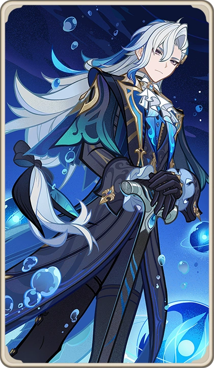

Neuvillette is not human, nor Archon—he is the reincarnation of the Hydro Dragon Sovereign, one of the original rulers of Teyvat before the rise of the Seven.
The Dragon Sovereigns were beings of pure elemental authority, each embodying absolute control over their element.
Before Celestia established the Archon system, elemental dragons ruled naturally.
The Archons do not truly “own” their elements—they borrow authority granted by Celestia.
Neuvillette represents the original, rightful authority of Hydro.
After the fall of the original dragons, Neuvillette was reborn in a human-like form.
However, he retained fragments of his past identity and authority.
Unlike Archons, his power is innate—not granted.
Neuvillette became the Chief Justice of Fontaine, overseeing trials and delivering final judgment.
While Furina performed as the Archon, Neuvillette represented true judgment and balance.
Fontaine’s citizens were not entirely human.
They originated from primordial seawater, making them vulnerable to dissolution.
This truth connects directly to the prophecy of Fontaine’s destruction.
A prophecy foretold that all Fontainians would dissolve, leaving only the Hydro Archon behind.
This was tied to the imbalance between dragon authority and divine rule.
The true Hydro Archon, Focalors, used the Oratrice to gather energy over centuries.
Her goal was to return authority to Neuvillette and save Fontaine.
Through Focalors’ sacrifice, Neuvillette regained full Hydro authority.
This marked a fundamental shift—from divine rule to natural elemental order.
Despite his origin, Neuvillette seeks to understand humans.
His journey is not about power—but empathy and judgment.
He evolves from an observer into a protector.
Neuvillette represents justice not as rules, but as balance between nature and humanity.
Unlike Fontaine’s system, his judgment is not performance—it is truth.
⭐ Rarity: 5★
📘 Weapon: Catalyst
💧 Element: Hydro
🧬 Constellation: Leviathan Judicator
🏷️ Real Name: Neuvillette (Hydro Dragon Sovereign)
🏛️ Category: Dragon / Sovereign
🎭 Role: Main DPS
Neuvillette focuses on charged attacks that scale with HP, dealing massive Hydro damage in sustained beams.
Skill: Generates droplets and Hydro damage
Burst: AoE Hydro damage + resource generation